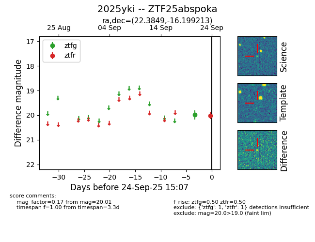

FINK: ZTF25abspoka
Lasair: ZTF25abspoka
ALeRCE: ZTF25abspoka
TNS: 2025yki
YSE: 2025yki
ZTF25abspoka (ztf,fink)
2025yki (tns,yse)
equatorial (ra, dec) = (22.3849,-16.19921)
galactic (l, b) = (163.8164,-75.94880)

last ztfg=19.98, ztfr=20.01
1 ztfg, 1 ztfr detections